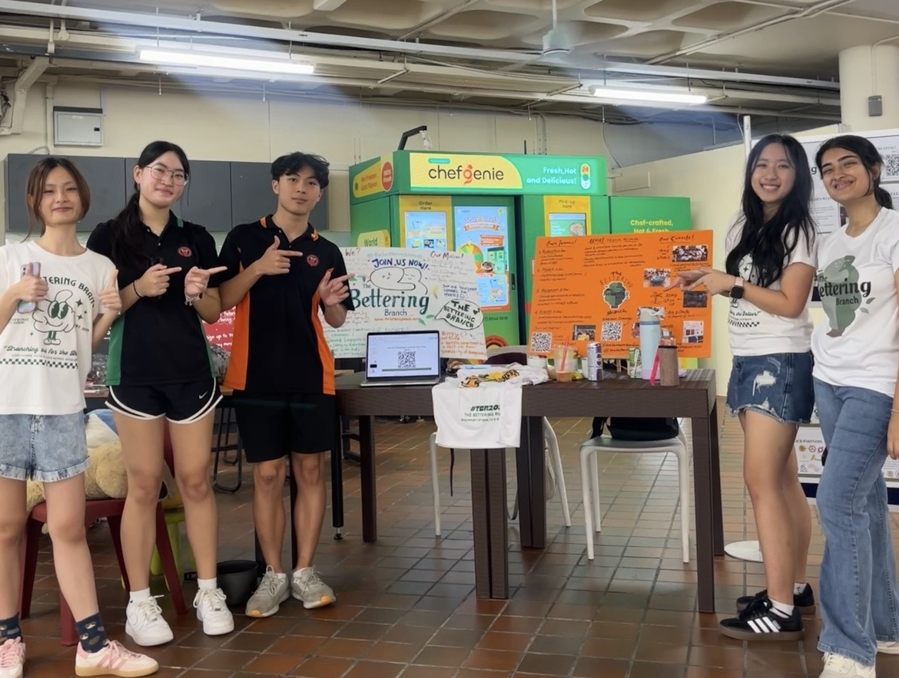
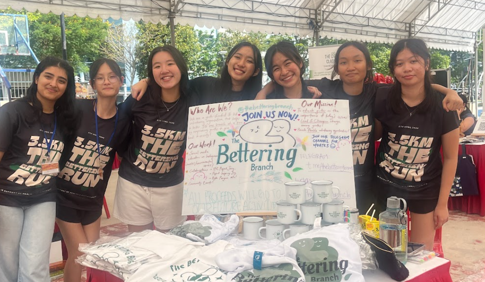

We get this question a lot.
Back in school, the phrase "Young people are the future" was something we heard almost daily.
Yet, around us, the reality was just slightly different. Everyone seemed indifferent. Conversations about social issues
were zero to none, whilst talks of video games, academics or the latest trend dominated...
And if any issues were ever discussed,
it would be followed shortly by the words 'For my portfolio/DSA/ABA', 'Compulsory' & 'LEAPS Points'.
In other words, volunteerism, concern and any action towards social and environmental issues were
boxes to tick, not born out of a real want to change things. We knew this was not just a tiny problem, but a sympton of an even
larger issue. The growing apathy in young Singaporeans.T
On paper and from the outside, young Singaporeans look engaged. Hundreds of Community Service hours are recorded, projects are completed and funds are raised.
But beneath that, if you were amongst them and join their daily conversations, you'll realise the
apathy is easily identifiable. It's the little things, as simple as not even batting an eye when food is thrown away or
joking around when real social issues are taught in school.
It all sounds pretty awful, but we never blamed our peers for any of it, because we knew why it was the way it was.

With exams that never seem to end, 7am to 7pm school days (days with CCA trainings), and the woes of being a teenager, where could Singaporean youths find the time to breathe, let alone think about caring?
We (the founders) understood with this, because we lived it. And we weren't particularly special either. We weren't wired differently from other Singaporeans to the point where the apathy didn't get to us. We were only 'special' because we were lucky enough to have the opportunities to genuinely connect And so, with the knowledge that our peers weren't inherently 'bad', we looked for platforms to give them the same opportunities to connect.
Except we couldn't find any that were inclusive, accessible or beginner-friendly. So, we built the opportunities for our peers instead.
Since then, we have only grown exponentially, surpassing our own expectations and goals. As of our last count, we have mobilised more than 600 volunteers, been awarded the Victoria Pioneer Award & impacted more than 1,000 seniors, kids & communities at risk in just 2 years! We look forward to what 2026 brings & to continue branching out for the better!

OUR THEORY OF CHANGE
We lower the barriers to showing up by not just making our event dates flexible and tailored to the busy schedules of Singaporean youths,
but also structuring them so that giving back feels as enjoyable and energising as
hanging out with your friends or doing something you love. From there, we see youths return for our events again and again!
And yes, we know. Maybe its because the
flexibility and fun makes it an 'easy' way to get hours,
but what really matters to us is that youths keep showing up.
Because the more they show up, the more they feel it :)
We strive for every event to be an experience where youths are given the opportunity
and space to connect with the cause. No one cannot manufacture the moment it clicks, but we
endeavor to keep creating the conditions that make it to happen until one day, giving back and actually caring feels like second nature.
In short, we get Singaporean youths to keep showing up because they innately want to,
and from there we walk alongside them till they believe empathy is simply the way to go.